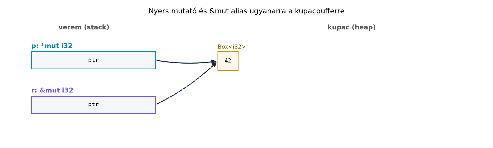

A C++-ban a nyers mutató és a reinterpret_cast a nyelv
alaprétegéhez tartozik. Amikor FFI-t írunk, egyedi memóriaelrendezést
készítünk, vagy a fordító által nem látható invariánst tartunk fenn,
gyakran nincs más választásunk: void*-ot castolunk,
char*-on keresztül nyúlunk objektumokhoz, és reméljük, hogy
a kód a gyakorlatban működik. A modern C++ ezt a réteget a
std::launder, a std::bit_cast, a
restrict és a memóriamodell szabályaival próbálja
megregulázni, de a hibák továbbra is gyakran csak futásidőben, és
gyakran csak „ritkán reprodukálhatóan” jelennek meg.
A Rust ezt a határvonalat nyelvi szintre emeli. A biztonságos Rust
nem engedi meg a nyers mutatók dereferálását, a union mezők
elérését vagy a static mut olvasását – ezeket explicit
unsafe blokkba kell tenni. Az unsafe nem a
„veszélyes üzemmód” kapcsolója, hanem egy szerződés: a
felelősség áthelyeződik a fordítóról a programozóra. Aki pedig ezt a
szerződést megszegi, nem definiált viselkedést (UB – undefined
behaviour) kaphat, amit a Rust a C++-hoz hasonlóan, de bizonyos pontokon
még szigorúbban kezel. Ebben az alfejezetben az unsafe öt képességét, a
nyers mutatókat, a tipikus UB-forrásokat és a Miri detektort tanuljuk
meg. A cél nem az, hogy mindent unsafe-ben írjunk, hanem
hogy megértsük, milyen invariánsokat kell fenntartani ahhoz, hogy a
ritka, valóban szükséges unsafe kód helyes legyen – és hogy a köré
épített biztonságos absztrakció ne hazudjon a hívónak.
Definíció (unsafe blokk). Az
unsafe { ... } szintaktikai jelölés, amelyben a következő
öt művelet elvégezhető. Maga a blokk semmilyen ellenőrzést nem kapcsol
ki; a kódváltoztatást nem hajtja végre, csupán a programozó nyilatkozata
arról, hogy a benne foglalt kód kielégíti a nyelv által megkövetelt
invariánsokat.
Definíció (unsafe fn). Az unsafe fn
olyan függvény, amelynek a törzsében implicit módon unsafe
blokk van, és amelyet biztonságos kódból csak unsafe
blokkon belül lehet hívni. Az unsafe fn dokumentációjában
meg kell adni a hívóra háruló előfeltételeket.
Definíció (unsafe trait és impl). Az
unsafe trait olyan trait, amelynek implementálása további,
a fordító által nem ellenőrizhető invariánsokat követel (például
Send, Sync, GlobalAlloc). Az
ilyen trait-et unsafe impl-lel lehet csak
implementálni.
Szabály (az unsafe öt képessége). A biztonságos
Rustban a következő műveletek nem megengedettek; mindegyik csak
unsafe blokkban vagy unsafe fn törzsében
végezhető el:
*const T vagy *mut T)
dereferálása;unsafe fn vagy unsafe metódus
meghívása;unsafe trait implementálása
(unsafe impl);static mut változó elérése;union mezőinek olvasása vagy írása.Fontos: az unsafe nem kapcsolja ki a
kölcsönzés-ellenőrzőt (borrow checker). Ha egy unsafe
blokkban biztonságos referenciákat (&T /
&mut T) hozunk létre, azokra továbbra is érvényesek a
Borrowing és az Élettartamok szabályai. Az unsafe csak
a fenti öt nyelvi határig terjed; minden más, így a mintaillesztés, a
move-szemantika, a generikusok ellenőrzése és a Result
kezelés változatlanul működik.
A Rust nyers mutatói a C++ T* const /
T const* párosához hasonlóan egyszerű memóriacímek, de
szemantikájukban közelebb állnak a C void*-hoz:
nincs tulajdonjoguk, nincs élettartam-információjuk, és nem
ellenőrzi őket a borrow checker. A *const T csak
olvasható, a *mut T olvasható és írható mutatót jelöl, de a
const/mut itt nem a C++
const-korrektségét jelenti – egy *const T-n
keresztül is lehet UB-t okozni, és egy *mut T-re is lehet
úgy gondolni, hogy nem írunk rajta. A megkülönböztetés elsősorban a
szándék dokumentálására szolgál.
Nyers mutatót biztonságos kódban is létre lehet hozni, csak dereferálni nem:
let x = 42;
let p: *const i32 = &x; // biztonságos: referencia → nyers mutató
let q: *const i32 = std::ptr::null(); // biztonságos: null mutató
let r = p as usize; // biztonságos: cím egész számmá alakítása
// let y = *p; // HIBA: dereferálás csak unsafe blokkbanA mutató-aritmetika a C++ p + i műveletének felel meg,
de explicit metódusokkal történik:
add(n) / sub(n): előre / hátra lép
n elemmel; az eredménynek ugyanabban az allokációban (vagy
közvetlenül utána) kell lennie, különben UB.offset(n): a add/sub alacsony
szintű megfelelője; a hívó felel az érvényességért.wrapping_add(n) / wrapping_sub(n):
túlcsordulás-biztos lépés; a kapott mutató akár érvénytelen is lehet, de
a dereferálás csak akkor szabályos, ha érvényes.read() / write(): egyetlen elem olvasása /
írása a mutató címén.copy_from() / copy_to(): blokkmásolás; a
forrás és cél nem lehet átfedő, különben UB, ezért használjuk a
copy helyett a copy_nonoverlapping-et, ha a
nem-átfedés garantált.Szabály (nyers mutató dereferálása). Egy nyers
mutató dereferálása akkor definiált, ha a mutató (a) nem null, (b)
érvényes T típusú objektumra mutat, (c) a címe megfelelően
igazított (aligned) a T típushoz, és (d) a T
típus értékreprezentációja érvényes. A dereferálás csak
unsafe blokkban lehetséges, és a hívónak ezeket az
előfeltételeket dokumentálnia kell.
Példa nyers mutatóval végzett írásra:
let mut v = vec![1, 2, 3];
let p: *mut i32 = v.as_mut_ptr();
// SAFETY: p az első elemre mutat, a Vec legalább 3 elemű, az i32 igazítása
// a Vec<i32> allokátorában garantált.
unsafe {
p.add(1).write(42);
}
assert_eq!(v, vec![1, 42, 3]);A Vec::as_mut_ptr a belső puffer kezdőcímét adja; a
write felülírja a második elemet. Ez a példa jól mutatja,
hogy a nyers mutató nem véd a hibák ellen: ha például
p.add(3).write(0)-t írnánk, az a Vec
allokáción kívülre írna, ami UB. A biztonságos alternatíva ugyanerre a
feladatra a &mut [i32] slice és az indexelés.
Definíció (UB). Nem definiált viselkedés (undefined behaviour): olyan programállapot, amelyre a nyelvi specifikáció nem ír elő semmilyen viselkedést. A fordító joggal feltételezi, hogy UB soha nem következik be, és ez alapján optimalizálhat; ha mégis bekövetkezik, az egész program viselkedése érvénytelenné válik – nemcsak az adott utasítás, hanem az azt megelőző és követő kód is.
A Rust UB-katalógusának legfontosabb elemei a következők:
restrict kulcsszava. Egy &mut T referencia
kizárólagos, egyedi hozzáférést jelent: amíg a &mut él,
semmilyen más &mut T vagy &T sem
mutathat ugyanarra a memóriára, és nyers mutatón keresztül sem szabad
írni azt a memóriát, amelyre egy érvényes &mut mutat.
Ez a szabály a biztonságos kódban a borrow checker által automatikusan
teljesül, de nyers mutatóval megsérthető:let mut x = 10;
let r: &mut i32 = &mut x;
let p: *mut i32 = r; // &mut → *mut
// SAFETY: HIBÁS – r még él, és p-n keresztül írunk; ez &mut aliasing UB.
let y = unsafe { p.read() };
r.add(1); // használjuk r-et, ami a p-n keresztüli olvasással ütközikA fenti kód UB, mert r érvényessége alatt
p-n keresztül olvastunk. A hiba Miri-vel kimutatható.
Érvénytelen értékreprezentáció. A Rust típusai
nem minden bitmintát engednek meg. A bool például csak a
0 és 1 bájtot fogadja el; a char
csak érvényes Unicode skalárértéket; az enum esetén a
diszkriminánsnak a deklarált változatok valamelyikét kell jelölnie. Ha
egy nyers mutatón keresztül ilyen típusként értelmezünk egy memóriát,
amely nem érvényes reprezentációt tartalmaz, UB-t kapunk. Ezt a C++
bool/enum szabályai is tiltják, de a Rust a
char és az enum esetén gyakran még
szigorúbb.
Igazítás (alignment) megsértése. Minden típusnak
van igazítási követelménye: az i32 általában 4 bájtra, a
u128 akár 16 bájtra igazított kell legyen. Ha egy mutató
olyan címet jelöl, amely nem felel meg a T::align-nek, a
dereferálás UB. A Vec<u8> pufferéből például nem
szabad önkényes címre *const i32-et castolni, mert a
u8 puffer igazítása 1, így a kapott cím lehet, hogy nem
4-re igazított.
Adatverseny (data race). Ugyanazt a memóriát több szál egyidejűleg éri el, legalább az egyik írás, és nincs köztük megfelelő szinkronizáció. Ez a szabály azonos a C++-beli adatverseny definíciójával; a Rust a Send és Sync és az Atomikus műveletek révén a biztonságos kódban kizárja, de nyers mutatókkal és nem szinkronizált hozzáféréssel ez a korlát megkerülhető.
Dangling pointer dereferálása. Olyan memóriára mutató mutató dereferálása, amely már felszabadult, vagy amelynek az élettartama lejárt. A Rust a biztonságos kódban ezt a borrow checkerrel és a lifetime-okkal akadályozza meg, de nyers mutatóval ezt a szabályt is kézzel kell betartani. A C++-hoz hasonlóan a dangling pointer használata UB.
A C++-ban a reinterpret_cast és a nyers mutatók szabadon
használhatók; a hibákat a strict aliasing szabály, a
restrict és a memóriamodell próbálja korlátozni, de a
felelősség nagyrészt a programozóé. A Rust ezt a nyers mutatók
dereferálásának unsafe blokkba kényszerítésével és a
referencia-aliasing szigorúbb szabályával teszi explicité.
#include <cstdint>
bool read_bool_from_u8(const std::uint8_t& byte) {
// UB, ha byte értéke nem 0 vagy 1;
// a C++ szabvány szerint a bool tárolt értéke csak false/true lehet.
return *reinterpret_cast<const bool*>(&byte);
}A Rust megfelelő hibás változata:
unsafe fn read_bool_from_u8(byte: &u8) -> bool {
let p: *const bool = byte as *const u8 as *const bool;
// SAFETY: a hívó szerződése szerint byte értéke 0 vagy 1; ez a példa
// ezt a szerződést nem ellenőrzi, így a hívó hibája esetén UB.
unsafe { *p }
}A különbség nem abban van, hogy a Rust észreveszi-e a hibát – nem
veszi észre –, hanem abban, hogy a Rust a &mut
kizárólagosságát a teljes optimalizálási csővezetékben feltételezi, míg
a C++ csak a restrict minősítővel ad ilyen garanciát. A
Rust aliasing-szabályai tehát szigorúbbak, mint a C++
általános aliasing-szabályai: a &mut T a C++
T* restrict-hez hasonló, de a nyelv minden
&mut referenciára automatikusan alkalmazza, és a
szabály megsértése a borrrow checker megkerülésével azonnal UB, nem csak
akkor, ha a fordító véletlenül kihasználja.
A Miri egy interpretáló alapú eszköz, amely a rustc MIR
(mid-level intermediate representation) szintjén futtatja a kódot, és
közben ellenőrzi a memória-hozzáféréseket, az igazítást, az érvénytelen
bitmintákat és az aliasing-szabályokat. A Miri a Rust projekt része, de
a pontos parancs és a nightly-toolchain követelmény verziófüggő;
ellenőrizzük a hivatalos miri dokumentációt.
Munkakönyvtár:
~/rust-labor/r042-unsafe-superpowers/
Hozzuk létre a projektet, és írjuk meg a hibás kódot:
cargo new --bin r042-unsafe-superpowers
cd r042-unsafe-superpowerssrc/main.rs – szándékosan hibás változat:
unsafe fn read_bool_from_u8(byte: &u8) -> bool {
let p: *const bool = byte as *const u8 as *const bool;
// SAFETY: a hívó szerződése szerint byte ∈ {0, 1}; itt a hívó megszegi ezt.
unsafe { *p }
}
fn main() {
let b: u8 = 2;
let value = unsafe { read_bool_from_u8(&b) };
println!("{value}");
}A szokásos futás (cargo run) lefordul, és gépfüggő módon
true-t vagy false-t írhat ki; a b
2-es értéke nem érvényes bool reprezentáció, tehát a
program UB-t követ el. Miri-vel futtatva a hiba kimutatható:
# A Miri nightly toolchain-t és a rustup miri komponenst igényel;
# a pontos parancs verziófüggő, ellenőrzendő:
cargo +nightly miri runA Miri által jelzett hiba lényege:
error: Undefined Behavior: type validation failed: encountered invalid value 2 for type bool,
azaz érvénytelen bool értéket kapott. A pontos üzenet a
Miri verziójától függ.
Javítás. A biztonságos, idiomatikus megoldás egyetlen összehasonlítás:
fn byte_to_bool(byte: u8) -> bool {
byte != 0
}
fn main() {
let b: u8 = 2;
let value = byte_to_bool(b);
println!("{value}"); // true
}Ha valamilyen FFI-követelmény miatt mégis szükség lenne a nyers mutatóra, a szerződést explicit ellenőrzéssel kell betartani:
unsafe fn read_bool_from_u8(byte: &u8) -> bool {
// SAFETY: a hívótól elvárjuk, hogy a *byte memória érvényes u8 legyen;
// a függvény maga ellenőrzi a bool érvényes reprezentációját.
if *byte > 1 {
panic!("invalid bool representation: {}", *byte);
}
let p: *const bool = byte as *const u8 as *const bool;
// SAFETY: p nem null, a byte igazítása 1, ami a bool-nak is megfelel,
// és a byte értéke 0 vagy 1, tehát érvényes bool.
unsafe { *p }
}A második változat már nem UB, mert az érvénytelen bitmintát a cast előtt kiszűrjük; a Miri ezt már nem jelzi hibaként. A megoldás rávilágít az unsafe szerződések alapelvére: az invariánst vagy ellenőrizzük a határon, vagy szigorúan dokumentáljuk a hívó felé, de soha nem hagyjuk kimondatlanul.
Az alábbi ábra azt az esetet mutatja, amikor egy nyers mutató és egy
&mut referencia egyszerre mutat ugyanarra a
kupacpufferre. A &mut érvényessége alatt a nyers
mutatón keresztüli olvasás vagy írás megsérti a kizárólagosságot, tehát
UB.

A p nyers mutató és az r
&mut referencia ugyanarra a kupacblokkra mutat. Mivel
r kizárólagos referenciaként viselkedik, a p-n
keresztüli hozzáférés a r érvényességi tartományában UB-t
okoz; a dashed nyíl ezt a tiltott, aliasoló mutatót
jelöli.
Túl nagy unsafe blokk. Ha egy egész függvényt
unsafe-be teszünk, elveszítjük annak lehetőségét, hogy a
biztonságos részeket a fordító ellenőrizze. A jó gyakorlat az, hogy az
unsafe blokk a lehető legkisebb legyen, és mindig
// SAFETY: komment előzze meg a hívó által fenntartott
invariánsokkal. Az unsafe fn esetén a törzs implicit
unsafe, ezért a függvény elején dokumentálni kell az
előfeltételeket.
Nyers mutatóval megkerülni a borrow checkert. A
tipikus kísérlet: „ha a borrow checker nem engedi, csinálok nyers
mutatót”. Ez az &mut aliasing UB-hoz vezet, még akkor
is, ha a kód látszólag működik. A Miri és a release módban agresszívabb
optimalizálás gyakran leleplezi az ilyen kódot. A helyes megoldás a Belső mutabilitás vagy a Mutex,
RwLock, csatornák használata.
transmute érvénytelen bitmintákra.
A std::mem::transmute tetszőleges típusok közötti
bitmásolást végez, és könnyen érvénytelen
bool/char/enum értéket hozhat
létre. Ha az átalakítás nem garantáltan érvényes, használjunk
From/TryFrom implementációt vagy explicit
ellenőrzést; unsafe-beli transmute előtt
mindig igazoljuk a forrás és cél típus méretét, igazítását és érvényes
reprezentációját.
Unsafe kód élettartam-hazugsága. Ha egy
unsafe függvény egy nyers mutatóból
&'a T-t készít, a hívónak garantálnia kell, hogy a
mögöttes adat legalább 'a ideig él. Ellenkező esetben a
kapott referencia dangling lesz, és a hibát a borrow checker nem fogja
észrevenni, mert a nyers mutatónál nincs élettartam-információ.
Igaz vagy hamis? „Az unsafe blokk kikapcsolja a borrow
checkert, ezért a biztonságos referenciákra ugyanúgy érvényesek a
szabályok, mint máshol.” Indokolj egy mondatban, és sorold fel, melyik
öt művelet engedélyezett unsafe-ben.
Adott a következő C++ függvény:
// Visszaadja a vector első n elemének összegét.
int sum_first(const std::vector<int>& v, std::size_t n) {
const int* p = v.data();
int sum = 0;
for (std::size_t i = 0; i < n; ++i) {
sum += *p;
++p;
}
return sum;
}Írd át a függvényt Rustra (a) biztonságos slice-műveletekkel, (b)
nyers mutatókkal unsafe blokkban. Melyik változat az
idiomatikus, és miért?
Készítsd elő a Biztonságos absztrakció unsafe
alapon és a C ABI: extern “C”, repr(C), bindgen
és cbindgen alfejezet számára egy UB-katalógust! Hozz létre az
rkv-core crate-ben egy docs/unsafe-ub.md
fájlt, amely táblázatosan felsorolja a leggyakoribb UB-forrásokat
(aliasing, érvénytelen bool/enum, igazítás, adatverseny, dangling
pointer). Minden sorhoz írj egy rövid, ellenőrizhető példakódot és azt a
szabályt, amelyet a hívónak be kell tartania. A fájl legyen hivatkozható
a későbbi laborokból.
A következő kód egy C-stílusú hibakódot olvas be u8-ból
Rust enum-má, és hibásan transmute-öt
használ:
#[repr(u8)]
enum ErrorCode { Ok = 0, NotFound = 1, Internal = 2 }
fn read_error_code(raw: u8) -> ErrorCode {
// SAFETY: a hívó szerint raw mindig érvényes diszkrimináns.
unsafe { std::mem::transmute::<u8, ErrorCode>(raw) }
}Mi a baj ezzel a megoldással, ha a hívó 3-at ad át?
Javítsd a függvényt TryFrom implementációval és
match-csel, hogy ne lehessen UB-t okozni. Mutasd meg a
teljes javított kódot.
Az állítás hamis. Az unsafe blokk nem
kapcsolja ki a borrow checkert; a biztonságos referenciákra ugyanazok a
kölcsönzési és élettartamszabályok érvényesek. Amit az
unsafe engedélyez: (1) nyers mutató dereferálása, (2)
unsafe fn hívása, (3) unsafe trait impl, (4)
static mut elérése, (5) union mező
elérése.
Biztonságos változat:
fn sum_first(v: &[i32], n: usize) -> i32 {
v.get(..n).map(|s| s.iter().sum()).unwrap_or(0)
}Ez a változat automatikusan kezeli a túl hosszú n
esetet, és a get nem pánikol.
Nyers mutatós változat:
fn sum_first_raw(v: &[i32], n: usize) -> i32 {
let p: *const i32 = v.as_ptr();
let mut sum = 0;
// SAFETY: p az első elemre mutat; a slice legalább n elemű, ezért a
// p..p+n tartomány a slice érvényes memóriáján belül van, az i32 igazítása
// a slice allokációjában garantált.
unsafe {
for i in 0..n {
sum += *p.add(i);
}
}
sum
}A nyers mutatós változat ugyanazt a logikát valósítja meg, de a
n > v.len() eset UB-t okoz, míg a biztonságos változat
0-t ad. Ezért a biztonságos slice-műveletek az idiomatikus
megoldás.
Példa rkv-core/docs/unsafe-ub.md:
# Unsafe UB-katalógus
| UB-forrás | Példa | Hívó invariánsa |
|---|---|---|
| &mut aliasing | `let r = &mut x; let p = r as *mut _; *p = 1;` | `&mut` érvényessége alatt nincs más hozzáférés |
| érvénytelen bool | `*(&2u8 as *const u8 as *const bool)` | a memória csak 0/1 lehet |
| érvénytelen enum | `transmute::<u8, ErrorCode>(3)` | diszkrimináns érvényes |
| igazítás | `*(ptr as *const i32)` 1-re igazított pufferből | cím igazított a T-hez |
| adatverseny | két szál ír egy `*mut i32`-et szinkronizáció nélkül | szinkronizáció vagy atomikus típus |
| dangling pointer | `Box::from_raw(p)` után `*p` | pointer az élettartamon belül marad |A katalógus a Biztonságos absztrakció unsafe alapon alfejezetben a belépési pontok ellenőrzéséhez, a C ABI fejezetben pedig a C-ből érkező adatok validálásához nyújt referenciát.
A hiba: ha a raw értéke 3, a
transmute érvénytelen diszkriminánst hoz létre, ami UB. A
javítás TryFrom implementációval:
#[repr(u8)]
#[derive(Debug, PartialEq, Eq)]
enum ErrorCode {
Ok = 0,
NotFound = 1,
Internal = 2,
}
impl TryFrom<u8> for ErrorCode {
type Error = &'static str;
fn try_from(raw: u8) -> Result<Self, Self::Error> {
match raw {
0 => Ok(ErrorCode::Ok),
1 => Ok(ErrorCode::NotFound),
2 => Ok(ErrorCode::Internal),
_ => Err("invalid error code"),
}
}
}
fn read_error_code(raw: u8) -> ErrorCode {
ErrorCode::try_from(raw).unwrap_or(ErrorCode::Internal)
}Így a hívó soha nem kap érvénytelen ErrorCode példányt;
a 3 esetén a read_error_code
Internal-t ad vissza, de a TryFrom explicit
hibaesetet is lehetővé tesz.
Az unsafe nyelvi határai öt képességet engednek meg:
nyers mutató dereferálása, unsafe fn hívása,
unsafe trait impl, static mut elérése és
union mezők használata. Az unsafe nem
kapcsolja ki a borrow checkert, és a nyers mutatók
(*const T, *mut T) dereferálásához a hívónak
nem-null, igazított, érvényes értékreprezentációjú memóriát kell
garantálnia. A leggyakoribb UB-források a &mut aliasing
megsértése, az érvénytelen bool/enum
bitminták, az igazítás megsértése, az adatverseny és a dangling pointer
dereferálás. A Miri interpretáló futás közben detektálja ezeket, ezért
unsafe kód tesztelésekor futtassuk cargo +nightly miri test
paranccsal (a pontos parancs verziófüggő). Továbbvitt
eredmény: az rkv-core/docs/unsafe-ub.md
UB-katalógus a Biztonságos absztrakció unsafe
alapon alfejezetben az invariánsok azonosításához, a C ABI: extern “C”, repr(C), bindgen és cbindgen
alfejezetben pedig a C-ből érkező adatok validálásához használható.
A fejezet a Rust Reference unsafe fejezetére, a Rust
Nomicon-ra és az Unsafe Code Guidelines tárgykörére épül; az URL-eket és
az aktuális fejezetcímeket ellenőrizni kell a hivatalos dokumentációban.
A Miri telepítésére és a pontos cargo +nightly miri run
parancsra vonatkozóan a Miri hivatalos dokumentációja az irányadó; a
fent megadott hibaüzenet leírása tájékoztató jellegű, a pontos szöveg
verziófüggő. Az unsafe öt képessége és a nyers mutatók
szabályai a stabil nyelvi szerződés részei; a
bool/enum érvényes reprezentációjára vonatkozó
UB-definíció a Rust Reference-ben és a Nomiconban található.